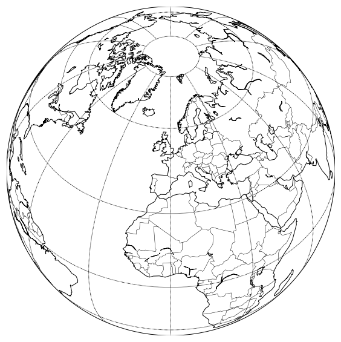
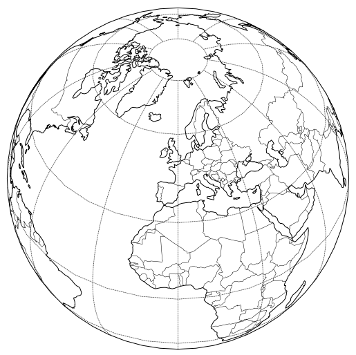
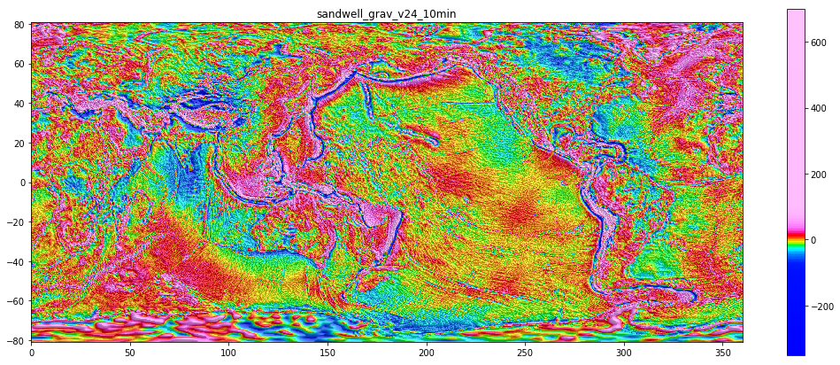
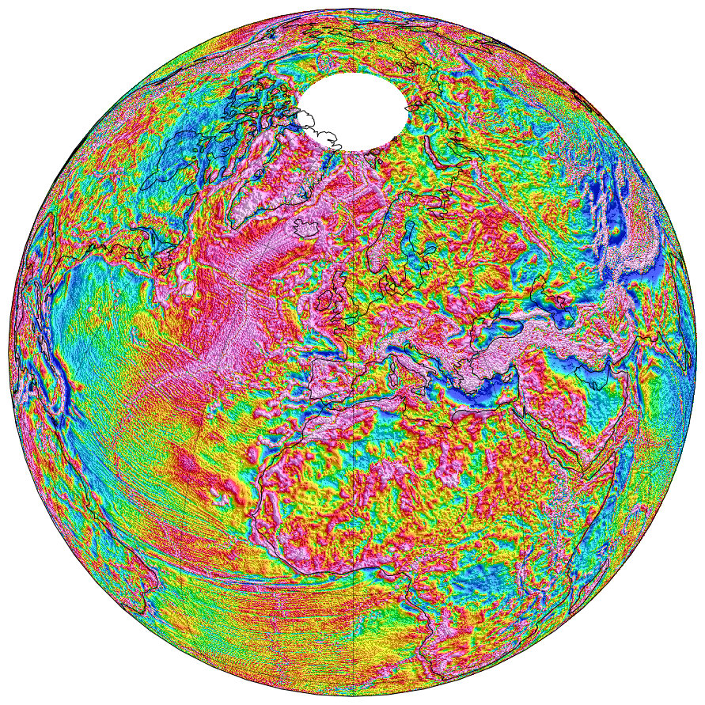

Create Globes with Basemap and Cartopy
In this short post, I am showing how to create maps in the orthographic projection, which, to most of us, corresponds to the globe as seen from outer space. As usual, the code and some additional examples are available in a jupyter notebook in the interpies repository.
Python libraries for plotting 2D data on maps
The two libraries I use here are basemap and cartopy. The first one is no longer in development but is still a perfectly valid choice for our purpose here. Cartopy is actually going to officially replace Basemap at some point, so it makes sense to look at the equivalent solution for creating globes.
Another solution would be to use the newly developed Python interface for GMT (GMT/Python), which looks promising. But that might be for another post…
Make a globe
Both libraries work in principle in a similar way: first create a map object with the projection of your choice and then add features like vector layers (i.e., coastlines) and images to it. In basemap, setting up a map is done with the Basemap class.
from mpl_toolkits.basemap import Basemap
m = Basemap(projection='ortho', lon_0=0, lat_0=45, resolution='c')
# draw coastlines and borders
m.drawcoastlines()
m.drawcountries()
# draw meridians and parallels
m.drawmeridians(np.arange(0, 360, 30))
m.drawparallels(np.arange(-90, 90, 30))
plt.show()
In cartopy, things are actually closer to the typical matplotlib philosophy: create Axes with plt.axes and tell matplotlib to use a specific projection (Axes then become GeoAxes). Then use methods to draw objects within the axes.
import cartopy
import cartopy.crs as ccrs
import cartopy.feature as cfeature
ax = plt.axes(projection=ccrs.Orthographic(0, 45))
# draw coastlines and borders
ax.add_feature(cfeature.COASTLINE)
ax.add_feature(cfeature.BORDERS, lw=0.5)
# draw meridians and parallels
gl = ax.gridlines(color='k', linestyle=(0, (1, 1)),
xlocs=range(0, 390, 30),
ylocs=[-80, -60, -30, 0, 30, 60, 80])
Global Gravity Data
The satellite gravity anomalies from Sandwell are perfect for this exercise (Sandwell et al., 2014). However, it is not a truly global dataset as it actually does not cover the poles. That’s not an issue for cartopy. However, a few more steps will be necessary in basemap to achieve the same result.
I explained in a previous post how to create a plain grid of Sandwell’s gravity anomalies. Using interpies I can then load the grid and create an image with hillshading and a colormap applied.

In interpies, I have recently added a new method to save as an image the map without the labels and the colorbar.
import interpies
grid1 = interpies.open('../data/sandwell_grav_v24_10min.tif')
grid1.save_image('../data/grav_v24_10min.png',
cmap_brightness=1.5, hs_contrast=3.0)Warping the resulting image around the globe with cartopy is then as easy as using the imshow method in matplotlib. The fact that higher latitudes are not covered is dealt with by setting the correct extent.
im = imageio.imread('../data/grav_v24_10min.png')
ax = plt.axes(projection=ccrs.Orthographic(0, 45))
ax.imshow(im[:,:,:3], extent=[0.001, 360, -80.720, 80.738],
origin='upper', transform=ccrs.PlateCarree())
# draw coastlines and borders
ax.add_feature(cfeature.COASTLINE)
ax.add_feature(cfeature.BORDERS, lw=0.5)
# draw meridians and parallels
gl = ax.gridlines(color='k', linestyle=(0, (1, 1)),
xlocs=range(0, 390, 30),
ylocs=[-80, -60, -30, 0, 30, 60, 80])
In basemap, things are a little more complicated because the warping function accepts only images that cover the whole globe and that start at -180 degrees. So our initial image needs to be both padded with white borders and shifted by 180 degrees. See the notebook on GitHub for the details about the way to achieve this.
References
Sandwell, D. T., R. D. Müller, W. H. F. Smith, E. Garcia, R. Francis. 2014. New global marine gravity model from CryoSat-2 and Jason-1 reveals buried tectonic structure, Science, Vol. 346, no. 6205, pp. 65-67, doi: 10.1126/science.1258213.